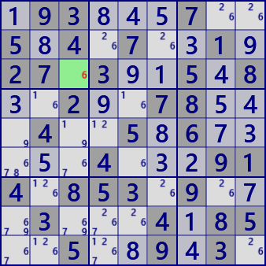

Last Digit
「Last Digit」は、数独の数字配置のルールそのものです。
0～26のハウスについて、「未確定のセルが1つのハウスでは、そのセルは残りの数字に確定」します。
左の例では X=4 Y=6 Z=8 に確定します。
問題例

背景が濃いセルは問題数字、 淡いセルは解読したセル、
小さい数字は候補数字
R3C3のセルは数字6と確定した。
.93...7..5.4.7..1.27.3..5.8..2..78...4..5.6.....4...914.853.9...3...4.85..5..9.3.
素朴にプログラムを作れば、次のコードになるでしょう。
[09]GetCell_Houseでハウス(行・列・ブロック)内のnx番目のセルを取得し、ハウス内の未確定セルが1セルのとき解読成功となります。
[16]SolCodeは解析繰返しの始めに”-1”に設定し、セルの数字が確定したとき"1"とする制御変数です。
値"2"は、候補数字から除外できる数字が見つかったことを表します。
[18] MltSolOnは、複数のセルが同時に確定する場合に”同時/"個別に確定”の制御変数です。
[25] SolInfoDspは”解読のみ行う/ユーザーへの情報提供を行う”の制御変数です。